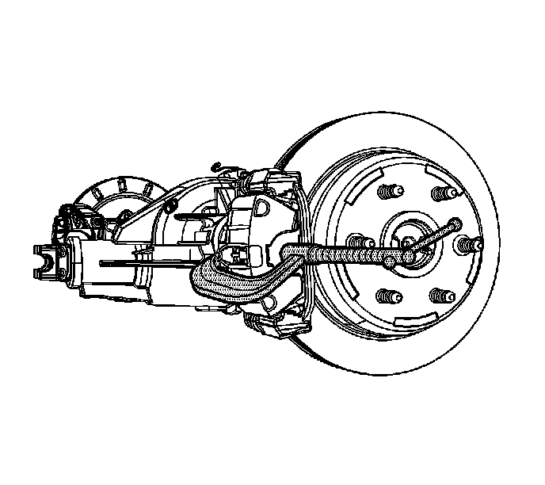
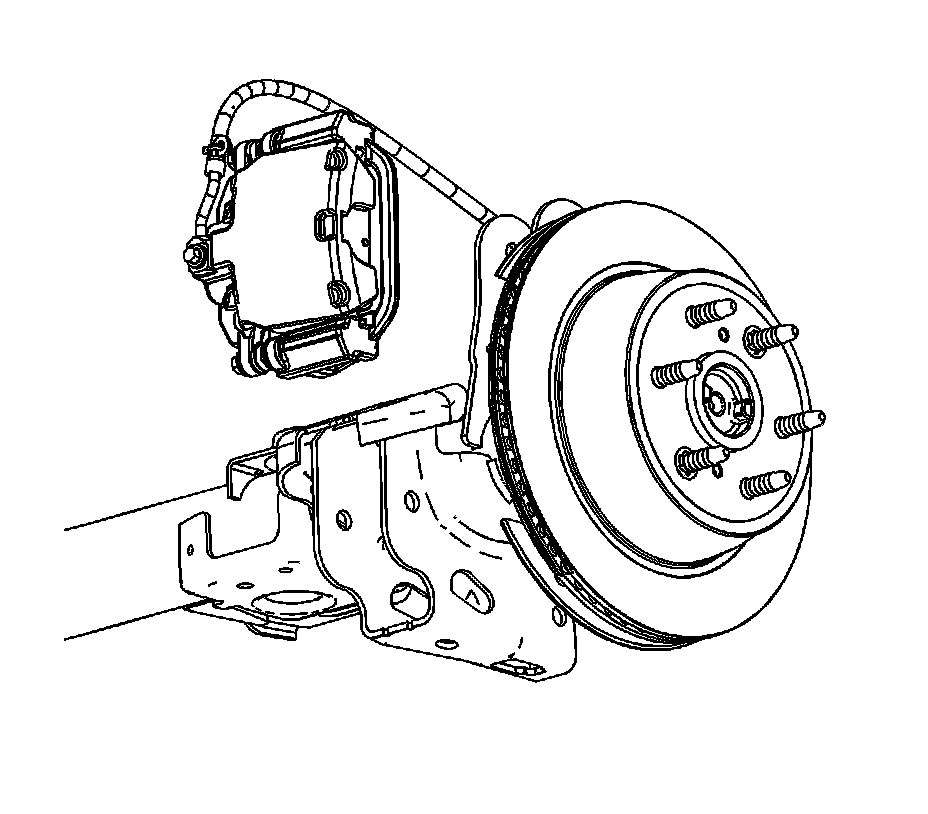
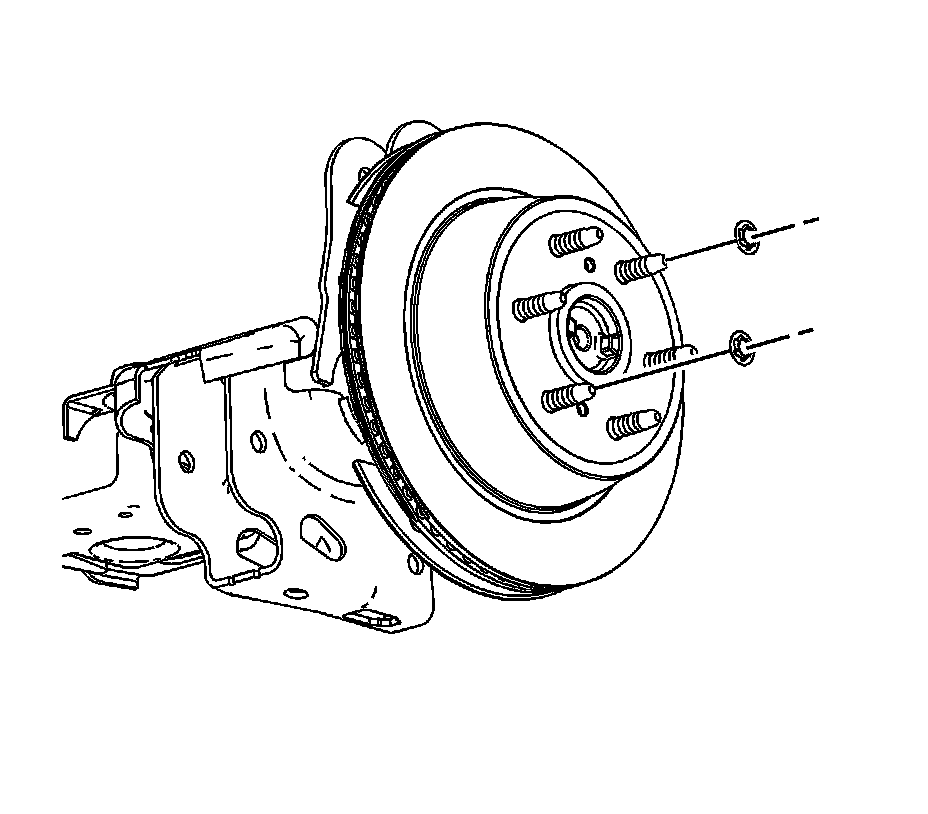
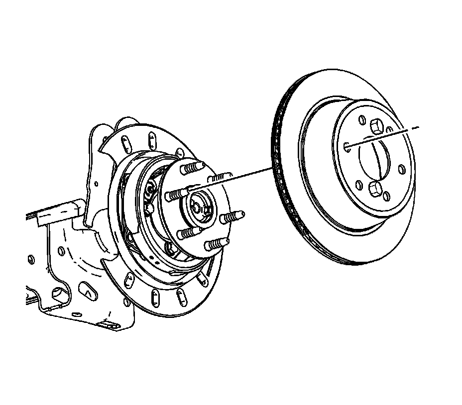
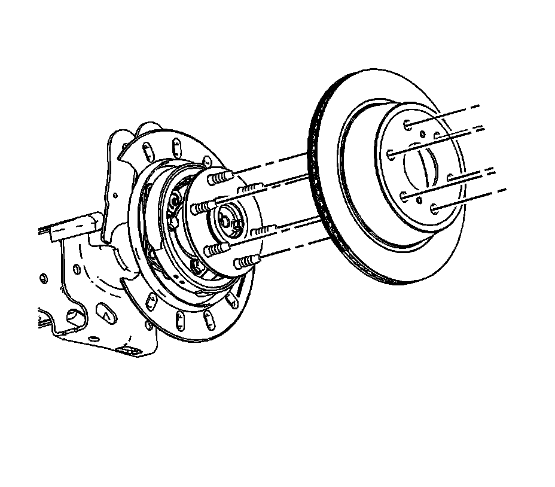

Rear Brake Rotor Replacement (1500 Series)
Rear Brake Rotor Replacement (1500 Series)
Tools Required
^ J 41013 Rotor Resurfacing Kit
^ J 42450-A Wheel Hub Resurfacing Kit
Removal Procedure
Caution: Refer to Brake Dust Caution.
1. Inspect the fluid level in the brake master cylinder reservoir.
2. If the fluid level is midway between the maximum-full point and the minimum allowable level, no fluid needs to be removed from the reservoir before proceeding.
3. If the fluid level is higher than midway between the maximum-full point and the minimum allowable level, remove fluid to the midway point before proceeding.
4. Release the park brake, if necessary.
5. Raise and support the vehicle. Refer to Lifting and Jacking the Vehicle.
6. Remove the tire and wheel assembly.

7. Compress the brake caliper piston.
1. Install a large C-clamp over the top of the caliper housing and against the back of the outboard pad.
2. Slowly tighten the C-clamp until the piston is pushed completely into the caliper bore.
3. Remove the C-clamp from the caliper.
8. Remove the brake caliper bracket mounting bolts.
Notice: Support the brake caliper with heavy mechanic wire, or equivalent, whenever it is separated from its mount and the hydraulic flexible brake hose is still connected. Failure to support the caliper in this manner will cause the flexible brake hose to bear the weight of the caliper, which may cause damage to the brake hose and in turn may cause a brake fluid leak.

9. Remove the brake caliper and the bracket as an assembly and support with heavy mechanics wire or equivalent.
10. If installing the original brake rotor, mark the relationship of the rotor to the hub.
11. Adjust the park brake so that the adjuster is fully seated.

12. Remove the push nuts from the brake rotor if necessary.
13. Apply a small amount of penetrating oil to the wheel studs.
14. Install the lug nuts on the end of the wheel studs.
15. Using a dead blow hammer, tap the brake rotor between the wheel studs.
16. Remove the lug nuts from the wheel studs.

17. Remove the brake rotor from the axle flange.
Installation Procedure
Important: Whenever the brake rotor has been separated from the hub/axle flange, any rust or contaminants should be cleaned from the hub/axle flange and the brake rotor mating surfaces. Failure to do this may result in excessive assembled lateral runout (LRO) of the brake rotor, which could lead to brake pulsation.
1. Using the J 42450-A, clean the rust and contaminants from the mating surface of the hub flange.
2. Using the J 41013, clean all rust and contaminants from the inside diameter of the hat section of the brake rotor to prevent any foreign material from getting between the brake rotor and the hub flange.

3. Align the rotor to its original position on the hub, if applicable, and install the rotor.
4. If the rotor was removed and installed as part of a brake system repair, measure the assembled lateral runout (LRO) of the rotor to ensure optimum performance of the disc brakes. Refer to Brake Rotor Assembled Lateral Runout Measurement.
5. If the rotor assembled LRO measurement exceeds the specification, bring the LRO to within specifications. Refer to Brake Rotor Assembled Lateral Runout Correction.
6. Install the caliper and caliper bracket assembly.
7. Perform the following procedure before installing the brake caliper bracket mounting bolts.
1. Remove all traces of the original adhesive patch from the threads of the bolts.
2. Clean the threads of the bolts with denatured alcohol or equivalent and allow to dry.
3. Apply threadlocker GM P/N 12345493 (Canadian P/N 10953488) to the threads of the bolts.
Notice: Refer to Fastener Notice.
8. Install the brake caliper bracket mounting bolts.
Tighten the bolts to 165 N.m (122 lb ft).
9. Adjust the park brake. Refer to Park Brake Adjustment.
10. Install the tire and wheel assembly.
11. Lower the vehicle. Refer to Lifting and Jacking the Vehicle.
12. With the engine OFF, gradually apply the brake pedal to approximately 2/3 of its travel distance.
13. Slowly release the brake pedal.
14. Wait 15 seconds, then repeat steps 12-13 until a firm pedal is obtained to properly seat the caliper pistons and pads.
15. Fill the master cylinder reservoir to the proper level with clean brake fluid, if necessary. Refer to Master Cylinder Reservoir Filling.